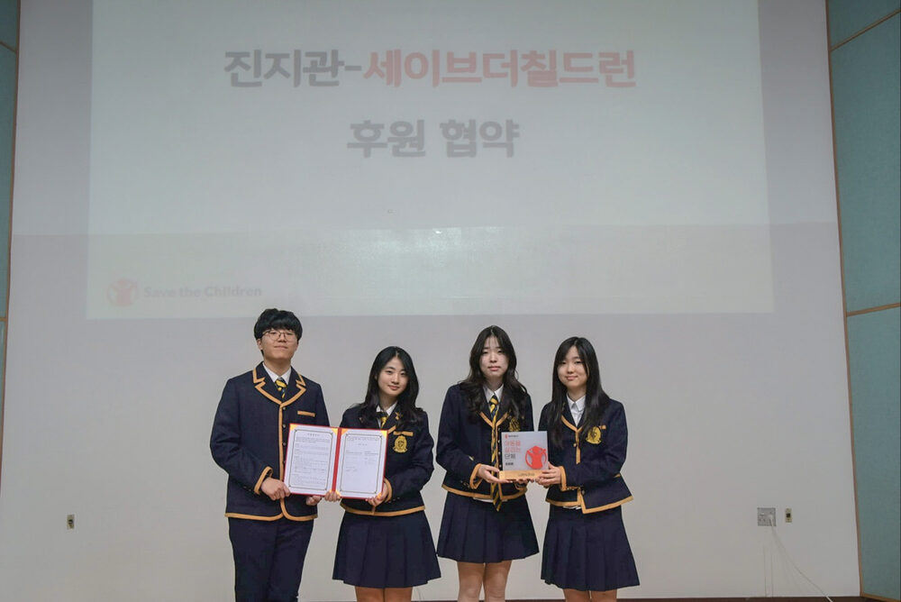
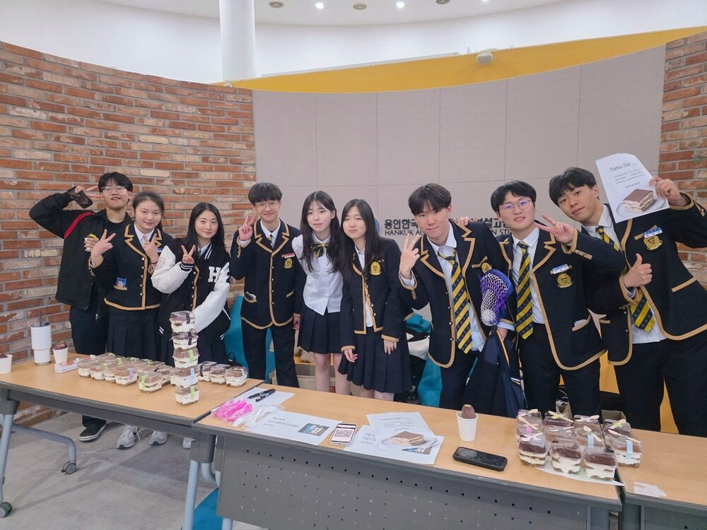
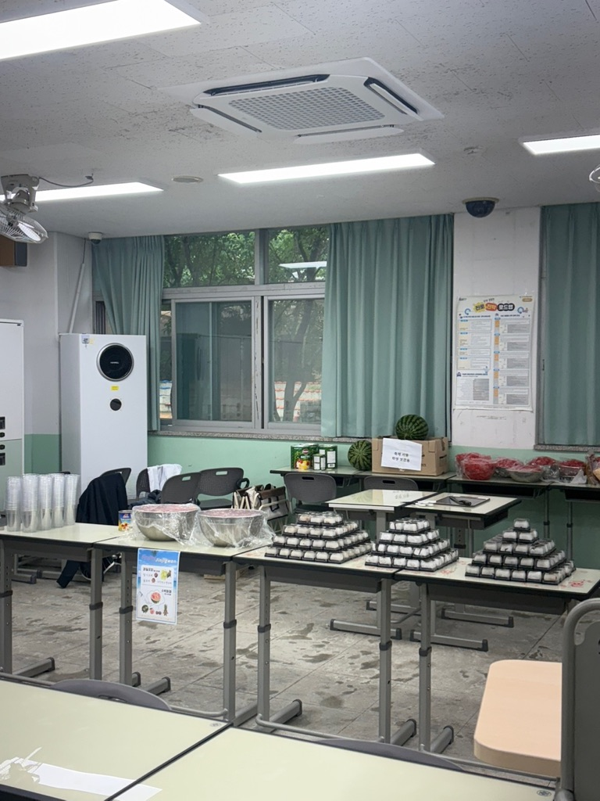
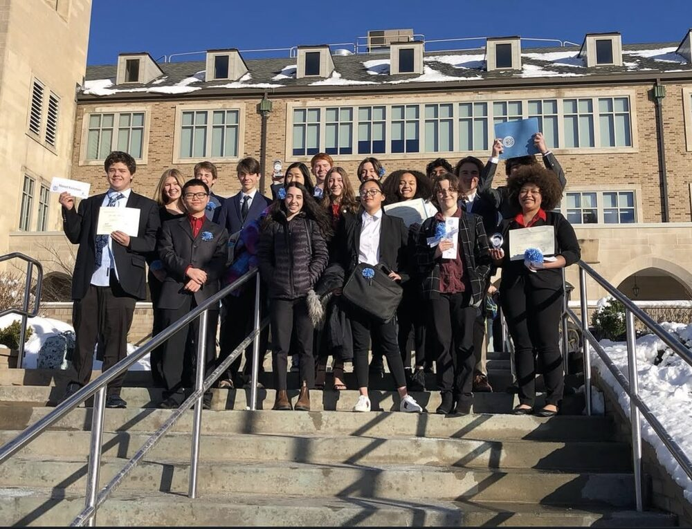
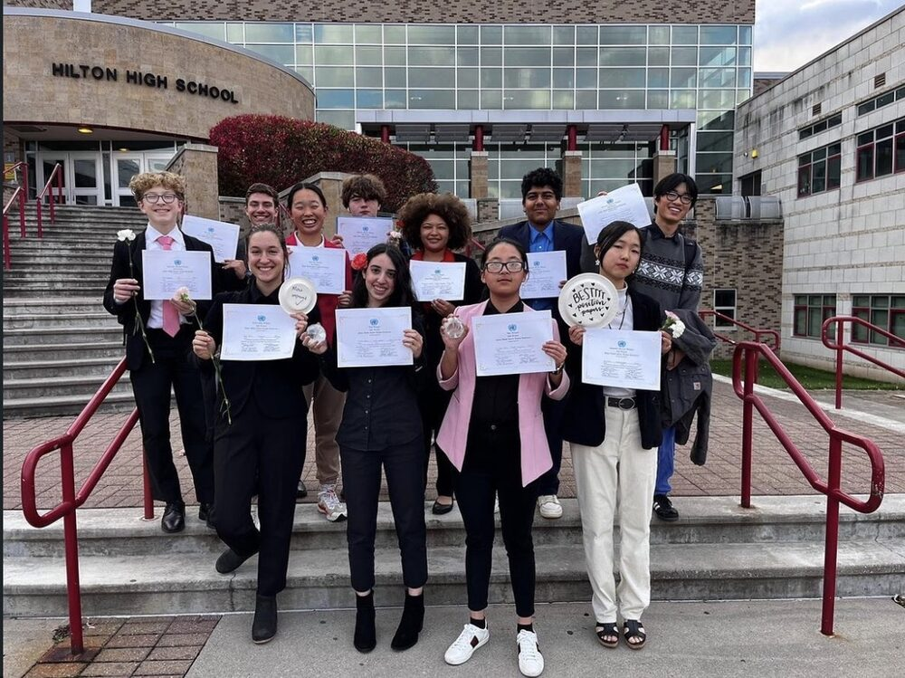
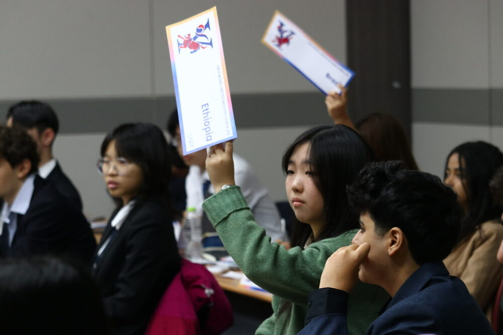
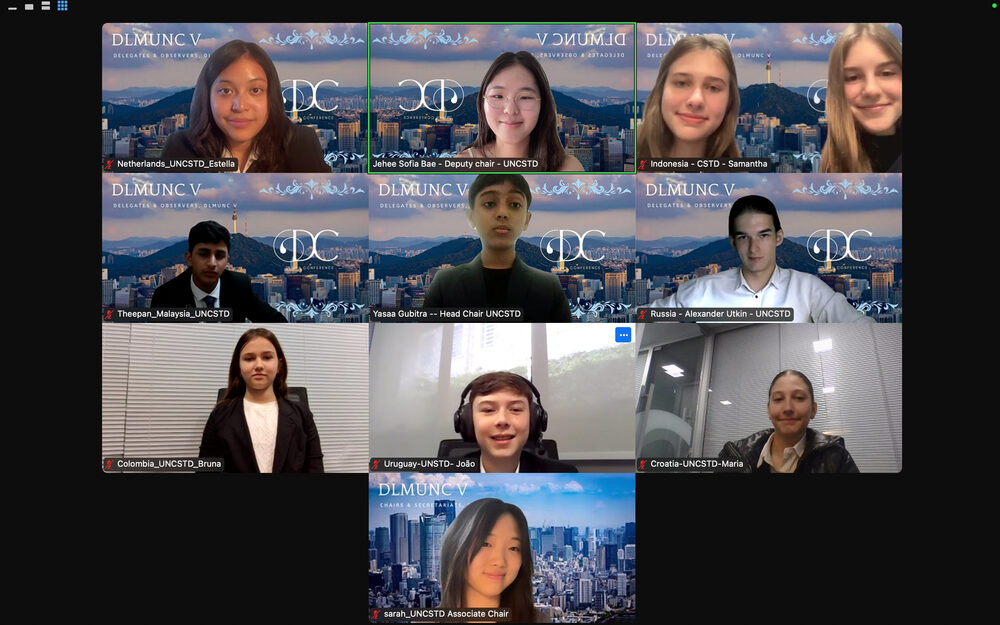
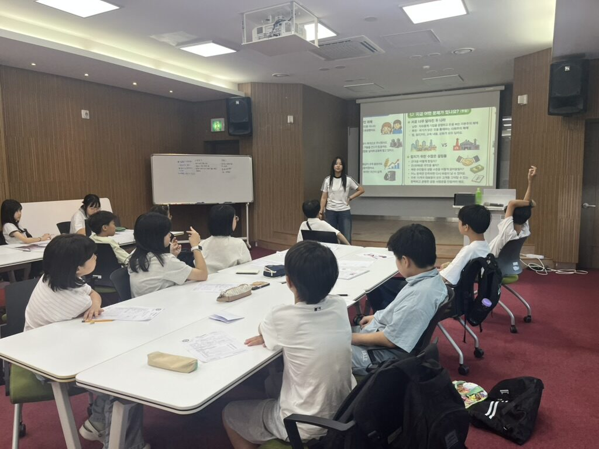

Internship
Intern, Korea Federation of Disability Organizations (KOFDO)
- Conducted comparative research on domestic and international airline reservation systems to inform accessibility policy recommendations.
- Compiled and organized a web resource (URL) archive to support a new digital archiving initiative.
- Curated and analyzed media coverage and press contacts using AI-assisted research tools for KOFDO's 2026 annual report, verifying accuracy of AI-generated content.
- Supported event logistics and documentation, including a mid-term progress review and a disability advocacy forum filming.

Non-Profit Founding
Head Chef, Co-President & Co-Founder, Jinjigwan (Cooking for Charity)
₩4M+
Cumulative revenue, 4 sales events
₩6M
Annual donation commitment
45
Student members
170+
Children served
- Signed a Memorandum of Understanding with Save the Children (Mar. 24, 2026); registered as a WESAVE organization committed to donating ₩6,000,000 annually toward a play-based developmental support program reaching 170+ children with disabilities across Gyeonggi, Seoul, Busan, Gwangju, and Gyeongnam.
- Generated ₩4,000,000+ in cumulative revenue across four bake sales with zero external advertising; per-event revenue grew from ₩947,630 to ₩1,940,503 (+104.8%) between the first and second events.
- Sustain a ₩500,000/month donation to Save the Children funded entirely from net profits; hold ingredient costs to 30–45% of gross revenue through bulk purchasing.
- Lead a 45-member organization with a defined leadership structure (CFO, COO, CSO, CDO, Chief of Human Resources) and an annual recruitment and knowledge-transfer protocol for continuity as members graduate.
- Partnered with Soul Bakery and Happy Bakery & Café, vocational rehabilitation facilities employing adults with severe disabilities, to run recurring campus pop-up markets where 100% of partner-product proceeds return to the bakeries.
- Reached 20K+ views across 7 Instagram posts with no ad spend; featured in Veritas Alpha and Korea Disabled News for the Save the Children partnership.
- Listed on the Yongin Lifelong Learning Center Human Network Talent Donation Portal; drafting an inter-school expansion model built on a shared operations manual and regular inter-chapter meetings.




Research Assistantship
Independent Researcher & Research Assistant, Ewha GSIS
Graduate School of International Studies, Ewha Womans University
- Learned applied quantitative migration analysis, including gravity models, institutional economics, and labor migration theory, and statistical analysis in STATA, including data cleaning, regression analysis, and interpretation of empirical results.
- Assisted research on Timorese labor migration to South Korea by conducting and analyzing field survey data from migrant workers, empirically evaluating South Korea's Employment Permit System.

Model United Nations: Leadership
President; Co-Founder / Secretary-General
- President, UNITED (Daewon Foreign Language High School Model United Nations Club); co-chaired DMUN (Daewon MUN) UNEP with 20+ delegates and 50+ observers.
- Hosted Middle School International Model United Nations (MIMUN) each semester, with 100+ nationwide participants.
- Chaired MUN4Charity (OHCHR), donating proceedings to charity; chaired Seoul Youth Model United Nations (SYMUN) UNSC; chaired DLMUN V UNCTAD.
- Co-founded MUN Without Borders, teaching Model UN procedures to local elementary children and organizing a city-wide MUN conference hosted at the Yongin city hall.
- Awarded at Korea University MUN, Sogang University MUN, UN Association of Rochester, Hilton MUN, and others.




